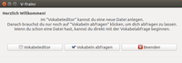
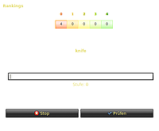

V-Trainr
Archivierte Anleitung
Dieser Artikel wurde archiviert, da er - oder Teile daraus - nur noch unter einer älteren Ubuntu-Version nutzbar ist. Diese Anleitung wird vom Wiki-Team weder auf Richtigkeit überprüft noch anderweitig gepflegt. Zusätzlich wurde der Artikel für weitere Änderungen gesperrt.
Zum Verständnis dieses Artikels sind folgende Seiten hilfreich:
V-Trainr  ist ein in Python geschriebener Vokabeltrainer. Dieser Vokabeltrainer ist so simpel wie möglich gehalten. Als Toolkit wird PyQt4 verwendet, womit der Vokabeltrainer eine vollständige grafische Oberfläche besitzt.
ist ein in Python geschriebener Vokabeltrainer. Dieser Vokabeltrainer ist so simpel wie möglich gehalten. Als Toolkit wird PyQt4 verwendet, womit der Vokabeltrainer eine vollständige grafische Oberfläche besitzt.
Neben normalem Abfragen gibt es z.B. auch das Abfragen nach dem Karteikastenprinzip. Oder auch einige nützliche Optionen wie dem Akzeptieren von Kleinschreibung oder dem Akzeptieren von Teilen der Vokabel. Zusätzlich hat der Vokabeltrainer auch ein Erinnerungssystem, das nach x-Minuten mit einem Ballontipp an das Lernen erinnert.
Hinweis:
Die letzte Version des Programms datiert auf 2009.
Voraussetzungen¶
Um V-Trainr unter Ubuntu benutzen zu können, müssen folgende Pakete installiert sein:
python
python-qt4
gettext
 mit apturl
mit apturl
Paketliste zum Kopieren:
sudo apt-get install python python-qt4 gettext
sudo aptitude install python python-qt4 gettext
Installation¶
Fremdpaket¶
Man kann V-Trainr über das Fremdpaket vtrainr-0.8.2-all.deb  manuell installieren [1].
manuell installieren [1].
Hinweis!
Fremdpakete können das System gefährden.
Manuell¶
Alternativ kann V-Trainr auch aus dem Quellcode installiert werden. Nach dem Herunterladen muss die Datei vtrainr-0.8.2.tar.bz2 in ein beliebiges Verzeichnis entpackt [2] werden. Dann muss die Datei vtrainr.py noch ausführbar gemacht werden [3].
Hinweis!
Fremdsoftware kann das System gefährden.
V-Trainr starten¶
|  |
| Der erste Start |
Wenn man V-Trainr über das Fremdpaket installiert hat, findet man bei Ubuntu-Varianten mit einem Anwendungsmenü einen Programmstarter unter "Bildung -> V-Trainr" [4].
Wer V-Trainr dagegen manuell installiert hat, muss man in das entpackte Verzeichnis wechseln und mit dem folgenden Befehl im Terminal [5] starten:
./vtrainr.py
Nach dem Starten von V-Trainr erscheint das Hauptmenü. Von hier aus öffnet man den Vokabeleditor, den Vokabelabfrager und den Einstellungsdialog. Klickt man auf "Beenden", werden alle zu V-Trainr gehörenden Fenster geschlossen.
Vokabeleditor¶
Zum Vokabeleditor kommt man mit einem Klick auf die Schaltfläche "Vokabeleditor" im Hauptmenü.
Erstellen und Öffnen¶
Zuerst muss eine Vokabeldatei erstellt werden, um danach Vokabeln hinzufügen zu können. Vokabeldateien haben in V-Trainr die Endung .vt. Um eine Vokabeldatei zu erstellen, wählt man im Editormenü "Datei -> Neue Vokabeldatei". Jetzt muss man den Dateinamen wählen und danach die Mutter- und Fremdsprache der Datei angeben.
Wenn man schon einmal eine Vokabeldatei erstellt hat, kann man sie im Editormenü mit "Datei -> Vokabeldatei öffnen" öffnen.
Vokabeln hinzufügen¶
Nachdem die Datei erstellt wurde, kann man Vokabeln hinzufügen. Dazu dient die Scaltfläche "Neue Vokabel" im Editormenü. Es öffnet sich ein Dialog mit zwei Eingabefeldern, die jeweils mit der eingegebenen Mutter- bzw. Fremdsprache beschriftet sind. Nun kann man eine Vokabel eingeben und über "OK" speichern. Wenn alle Vokabeln eingegeben wurden, klickt man auf "Schliessen".
Vokabeln editieren/löschen¶
Dies geschieht im Editormenü über "Vokabeln editieren". Es öffnet sich ein Fenster, in welchem alle Vokabeln der aktuellen Datei aufgelistet sind. Im oberen Teil des Fensters gibt es ein Suchfeld. Sobald man die gewünschte Vokabel gefunden hat, muss man sie anklicken und danach mit den Schaltflächen unten eine der folgenden Aktionen durchführen:
"Editieren"
"Löschen"
"Stufen zurücksetzen" - wenn der Stufenmodus aktiviert ist, werden die Stufen aller Vokabeln auf 0 zurückgesetzt
Vokabeldateien zusammenführen¶
Man kann mit V-Trainr zwei vorhandene Dateien zu einer Vokabeldatei zusammenführen. Dazu geht man im Editormenü auf "Datei -> Mit einer anderen Datei zusammenführen". Es öffnet sich ein Dialog, in welchem man die zweite Datei auswählen muss. Gegebenenfalls kann man die zusammengeführten Vokabeln unter einem neuen Dateinamen speichern. Dazu muss man die Option "Unter neuem Namen speichern" aktivieren und den neuen Dateinamen auswählen.
Vokabellisten in anderen Dateiformaten¶
V-Trainr kann nur Vokabellisten im eigenen .vt-Format direkt bearbeiten. Andere Formate können mit Hilfe des Programms V-Convertr umgewandelt werden, das bei Installation über das Fremdpakets automatisch mitinstalliert wird.
Kompatible Formate (in beide Richtungen):
".csv" - Felder müssen durch Komma getrennt sein, Encoding darf nicht UTF-8 sein, sondern z.B. ISO-8859-14
".vok2"
Vokabeln lernen¶
Um die Vokabeln einer erstellten Vokabeldatei zu lernen, muss man im Hauptmenü auf die Schaltfläche "Vokabeln abfragen" klicken. Nun muss man die Vokabeldatei auswählen, die abgefragt werden soll. Danach öffnet sich das Abfragemenü. Hier gibt es drei verschiedene Möglichkeiten abgefragt zu werden:
Fremdsprache -> Muttersprache
Muttersprache -> Fremdsprache
Gemischt
Hat man die gewünschte Richtung gewählt, öffnet sich das Abfragefenster.
Stufenmodus¶
Der Stufenmodus ist standardmäßig aktiviert. So funktioniert der Stufenmodus:
|  |
| Stufenmodus |
Am Anfang sind alle Vokabeln in Stufe 0
Beantwortet man eine Vokabel richtig, kommt sie eine Stufe weiter
Beantwortet man eine Vokabel falsch, kommt sie eine Stufe zurück (ggf. immer zurück zu 0, siehe Konfiguration)
Es werden immer zuerst die Vokabeln in der niedrigsten Stufe abgefragt
Sind alle Vokabel in Stufe 4, kommen sie zurück zu Stufe 0
Die farbigen Kästen im oberen Teil des Abfragefensters sind die verschiedenen Stufen, in welche eine Vokabel kommen kann.
Wie man den Stufenmodus abschaltet, ist in Konfiguration beschrieben.
Abfrage¶
Nachdem man im Abfragefenster auf "Start" geklickt hat, wird eine Vokabel angezeigt, zu welcher man die Übersetzung angeben muss. Unter dem Textfeld steht außerdem, in welcher Stufe sich die Vokabel befindet (vorausgesetzt der Stufenmodus ist aktiviert).
Wenn man nach dem Eingeben der Übersetzung auf "Prüfen" klickt, wird angezeigt, ob die Übersetzung richtig ist. Ist sie richtig, klickt man auf "Weiter...", um die nächste Vokabel zu übersetzen.
Ist sie falsch, wird die richtige Übersetzung angezeigt. Wenn man trotzdem der Meinung ist, dass man die Vokabel richtig übersetzt hat, z.B. wegen eines Schreibfehlers, kann man auf die mittleren Schaltfläche (mit dem Haken) klicken. Die Vokabel wird so als richtig gezählt. Ansonsten klickt man auf "Weiter...".
Am Ende wird angezeigt, wie viele Vokabeln man falsch übersetzt und wie lange man insgesamt gebraucht hat. Durch einen Klick auf "Nochmal abfragen" besteht die Möglichkeit, sich erneut abfragen zu lassen. Ist der Stufenmodus aktiviert, werden nur die Vokabeln der niedrigsten Stufe abgefragt.
 Übersichtsartikel
Übersichtsartikel- Erstellt mit Inyoka
-
 2004 – 2017 ubuntuusers.de • Einige Rechte vorbehalten
2004 – 2017 ubuntuusers.de • Einige Rechte vorbehalten
Lizenz • Kontakt • Datenschutz • Impressum • Serverstatus -
Serverhousing gespendet von